Optima Academy OnlineAn Education Experience Company
Optima Academy OnlineAn Education Experience CompanyMuebles y quehaceres
Yesterday's rooms, one quick look back
You already own the rooms: la cocina, el dormitorio, la sala… Today we put things in them — a bed, a table, chairs — and add the two chores you'll talk about all module: cleaning and tidying up.
Listen, then repeat
Click the 🔊 and say each word back. The first six are furniture (nouns — learn them with la / el); then two chore verbs and two words for up and down.
Los muebles — furniture
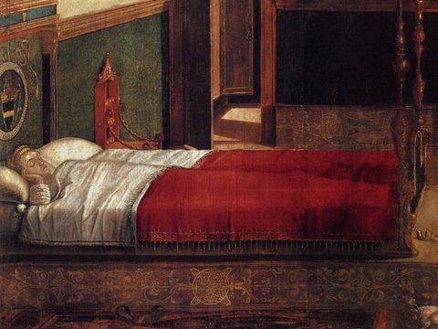
la camabed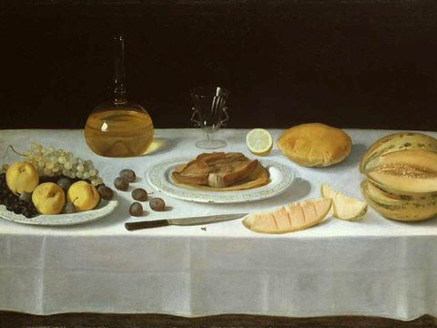
la mesatable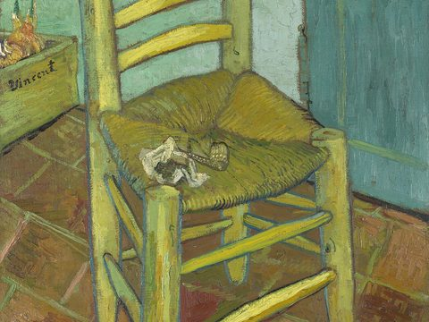
la sillachair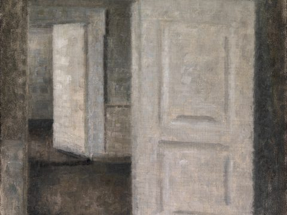
la puertadoor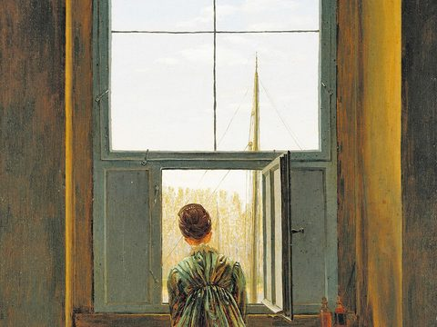
la ventanawindow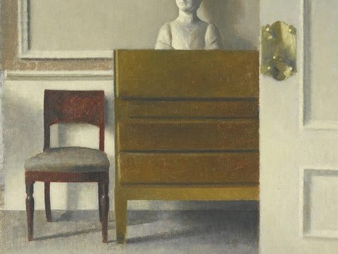
el mueblepiece of furniture
Los quehaceres y la ubicación — chores & up/down
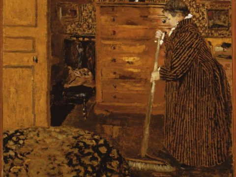
limpiarto clean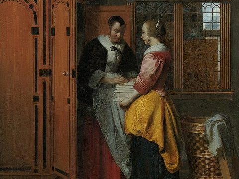
ordenarto tidy up / put in order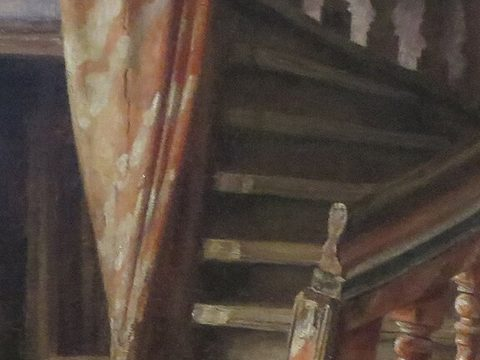
arribaupstairs / up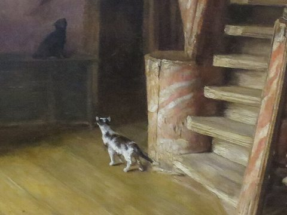
abajodownstairs / down
Handy pairing: los dormitorios están arriba (the bedrooms are upstairs), la cocina está abajo (the kitchen is downstairs) — notice you're reusing estar from Semester 1 for location.
Here is the right-hand side of Claudio Gay’s sala in Santiago. The light comes in from that side of the room. What is there two of on the right wall?
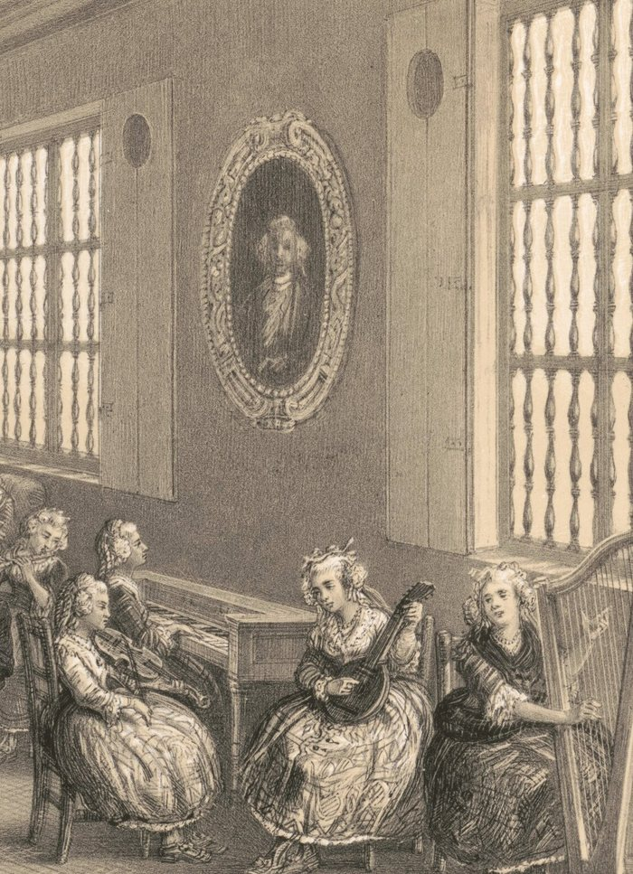
One more look: what hangs on the wall between the windows? (click for a hint)
A vowel that changes inside the verb
In Semester 1, a regular verb like hablar kept its stem (habl-) and just swapped endings: hablo, hablas, habla. But you already know one verb that does something extra: tener. Listen again:
| tener (to have) | Listen |
|---|---|
| Yo tengo dos hermanos. | |
| ¿Cuántos años tienes? | |
| Ellos tienen un primo en Guatemala. | |
| Nosotros tenemos una familia grande. |
In tienes and tienen the e of tener became ie — but tenemos kept the e. (Tengo is special: it has its own yo form.) Today you meet three more verbs that change a vowel in the stem, and you'll see exactly the same pattern.
When two verbs work together, you conjugate the first verb and the second verb stays in the infinitive (its -ar / -er / -ir form, the “to…” form). You have already done this:
Today it works the same way with the new verbs, and there is nothing in between:
In English we drop the “to” after “can”, but in Spanish the second verb is still the infinitive.
| Verb (infinitive) | Change | Example · listen |
|---|---|---|
| querer (ie) — to want | e → ie | Yo quiero una casa con jardín. |
| poder (ue) — to be able / can | o → ue | ¿Puedes limpiar la cocina? |
| dormir (ue) — to sleep | o → ue | Mi hermano duerme mucho. |
See the pattern? querer becomes quiero; poder becomes puedes. The ending is still the normal one you know (-o, -es, -e) — it's the stem vowel that shifts.
A stem-changing verb only changes the vowel inside the verb, in the stem. The ending follows the same rules you learned in Semester 1: an -ar verb takes the endings of hablar, an -er verb the endings of comer, an -ir verb the endings of vivir.
| quier + -o | = quiero | querer is an -er verb: same ending as como |
| pued + -es | = puedes | poder is an -er verb: same ending as comes |
| duerm + -e | = duerme | dormir is an -ir verb: same ending as vive |
| pod + -emos | = podemos | nosotros is outside the boot: the stem keeps its o, the ending is still regular |
The boot: which forms change
Here is all of querer. Write the forms in two columns (one person on the left, more than one on the right) and the forms that change draw the shape of a boot. Everything inside the boot changes. Nosotros sits outside the boot, so it keeps the vowel of the infinitive — just like tenemos.
| Singularone person | Pluralmore than one | |
|---|---|---|
| 1st personI / we | yoquiero | nosotros/as · outside the bootqueremos |
| 2nd personyou | túquieres | — |
| 3rd personhe, she, they; usted(es) | usted / él / ellaquiere | ustedes / ellos / ellasquieren |
shaded = inside the boot: the stem changes (e→ie). Dashed = nosotros, outside the boot: no change.
Tomorrow you'll meet the other patterns (there are four in all) and practise the boot with each of them.
You can’t tell from the spelling. Comer and querer both end in -er, but comer never changes (como, comes, come, comemos, comen) and querer does. So a boot verb is always learned with its change written in brackets after it: querer (ie), poder (ue), dormir (ue). Dictionaries and textbooks do the same. In this course, when you see the brackets, think “boot.” No brackets? It’s a regular verb: just change the ending.
Put a room, a chore, and a verb together
You now have rooms, furniture, chores, and your first boot verbs. Say each sentence out loud, write it in the box, then press Check my sentence: it shows what to fix. Reveal the answer only when you are done.
1. Say: “I want to clean my room.” (querer + limpiar + dormitorio)
2. Say: “Can you tidy up the living room?”
3. Say: “My brother sleeps a lot.”
Many older homes in Santiago and central Chile are built around a patio — an open central courtyard that brings light and air into the surrounding rooms. Families keep plants, a table, and chairs there, and it becomes an extra sala in good weather. Keeping the patio and the house ordenados (tidy) is a shared family task — exactly the chores limpiar and ordenar you learned today.
Chilean Spanish is famous across Latin America for being fast and full of local slang. A classic tag word is ¿cachai? (“you get it?”), and Chileans often add -po to sí (yes) and no: sípo, no po. The grammar you're learning is standard everywhere — but if you ever chat with a Chilean friend, expect a lively, playful accent all its own.
Your house is furnished and you've spotted the vowel that likes to change. Tomorrow the whole pattern clicks into place — ¡hasta mañana! (See you tomorrow!)